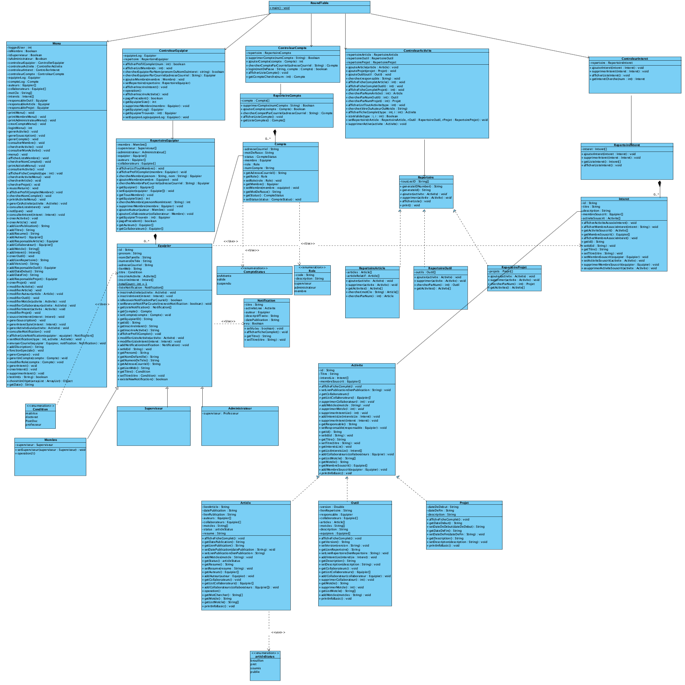
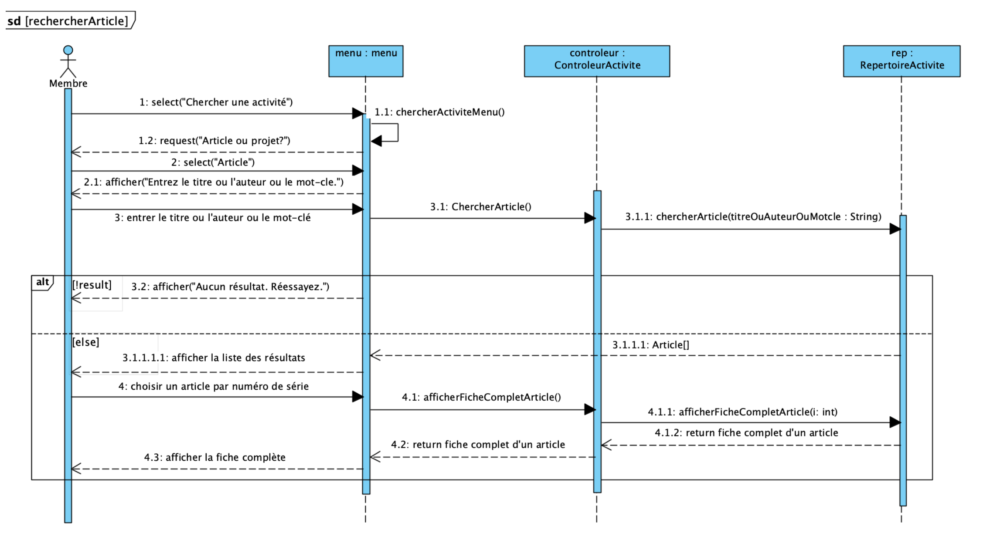
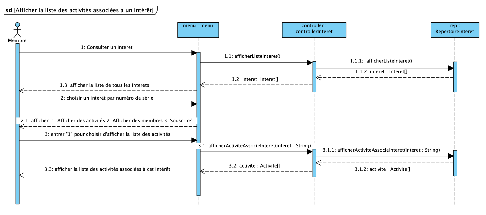
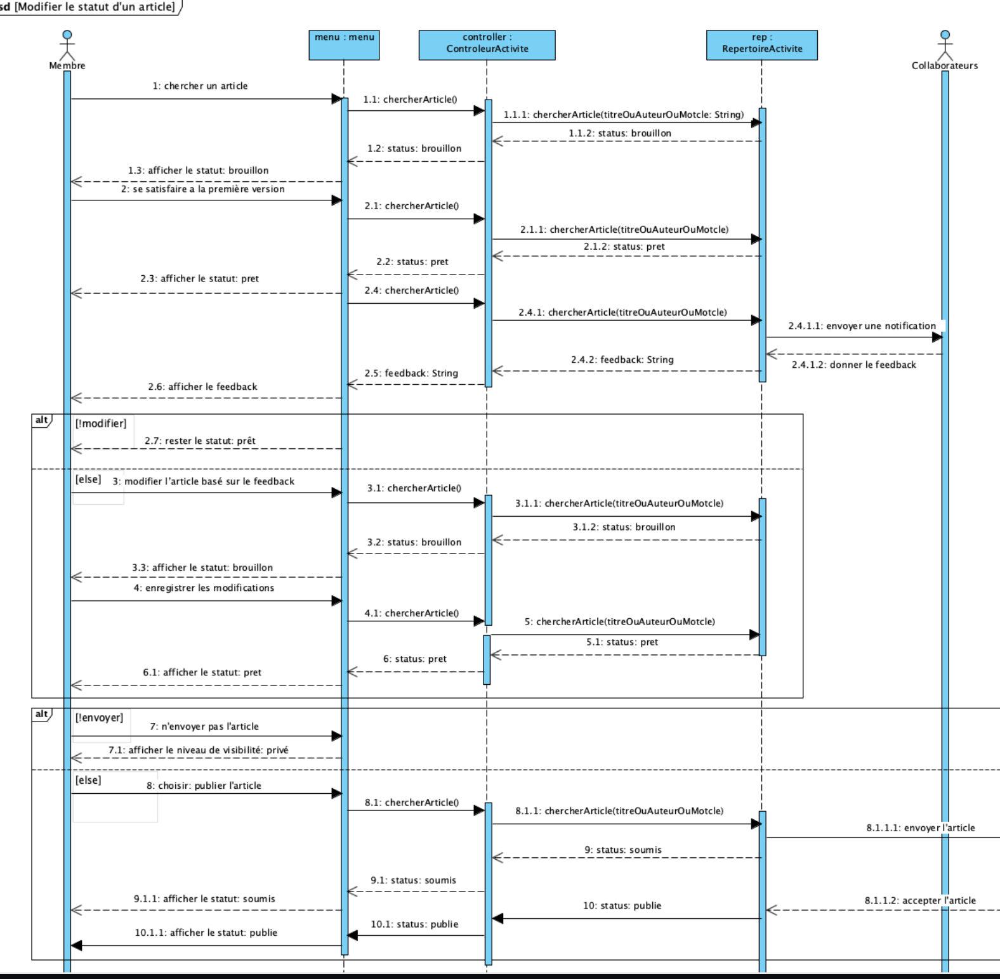

Plannification
Description
Le GEODES est un groupe de recherche du DIRO dédié au Génie Logiciel qui s'intéresse à toutes les activités liées au développement de logiciel, à l'évaluation du logiciel, à la modélisation des domaines d'affaires et à l'application de techniques d'intelligence artificielle pour comprendre les artéfacts produits et faciliter le développement. Cependant, les membres ne peuvent pas suivre les progrès et transmettre des messages en temps opportun en raison du manque de formalité et de immédiateté de la communication. GEODES nous a donc chargé de créer un outil 'La plateforme Roundtable' pour suivre, visualiser, gérer les membres et les activités, etc.
Échéancier
Pour DM1:Au cours de la première semaine, nous nous sommes familiarisés avec les exigences spécifiques de Roundtable et nous avons une idée générale de ce que l’on va faire. Ensuite, nous avons construit ensemble le cadre du projet et eu une rencontre avec le client Monsieur Lafontant mercredi. On lui a posé trois questions et a trouvé les réponses dans les requêtes du client mis à jour la semaine prochaine:
Q: Est-ce que le client a besoin d’un système sous forme de forum, tel que l’utilisateur peut télécharger des articles, des activités, des projets, etc par lui-même?
A: Oui, les membres peuvent ajouter des activités.
Q: Comment suivre les activités de recherche du groupe? Est-ce que ça veut dire que nous pouvons consulter tous les articles téléchargés par des membres dans ce groupe?
A: Les membres peuvent suivre les activités par consulter la liste des activités ou souscrits à eux. Tous les membres peuvent voir les activités publiques. Seuls les membres associés peuvent voir les activités privées.
Q: Est-ce que le nombre de membres est fixé? Est-ce que des membres sont déjà divisés en trois professeurs et tous les autres sont considérés comme visiteurs, ou tous les gens ont besoin de s’inscrire et obtenir leurs comptes?
A: Le nombre de membres n’est pas fixé. Un membre doit être associé à un des rôles suivants: PROFESSEUR, ADMINISTRATEUR, MEMBRE. La plateforme sera accessible uniquement aux membres du GEODES. La création d’un nouveau compte doit être vérifiée par l’administrateur.
En deuxième semaine, nous avons mis en place des cas d’utilisation à partir de modèle fonctionnel. Ensuite, nous avons sélectionné quelques CUs et les avons fait les images sous la forme de prototype pour montrer au client une réalisation de l'interface en ligne de commande. Au cours de la dernière semaine avant la remise du rapport, nous avons eu la dernière rencontre avec notre client et a posé une question:Est-ce que vous pouvez expliquer plus précisément les quatre statuts d’article? Quelle est la différence entre soumis et publiés? Quand on va mettre le statut 'brouillon', 'prêt'? Est-ce qu'ils sont reliés avec privé ou pas?
On a également obtenu une réponse précise:1. Lorsqu'un article est créé, son statut est brouillon (on travaille dessus).
2. Il passe au statut prêt lorsqu'on a une première version satisfaisante (on peut demander à certains de le
lire pour obtenir du feedback).
3. S'il y a des modifications à apporter, on retourne en brouillon.
4. Sinon on passe au statut soumis (l'article est envoyé à un journal pour évaluation).
5. Si le journal accepte l'article, il est publié.
Sur la plateforme, un article peut être privé ou public. Cependant, lorsqu'un article atteint le statut publié
il devient public.
Pour DM2:
Au cours de la première semaine après la soumise, nous avons analysé ensemble les lacunes du rapport du
livrable 1 basé sur le feedback DM1 et corrigé les défauts. En parallèle, nous avons analysé les informations
nécessaires pour les diagrammes en fonction des besoins et discuter la structure des diagrammes d'activités
sur la base des CUs et des scénarios.
La deuxième semaine, nous avons commencé à dessiner les diagrammes avec Visual Paradigm. Mingze Li a d'abord
complété ## diagrammes d'activités correspondant au CUs des membres. Qianyun Shen a ensuite complété le
diagramme de classes. Duola Peng a complété les 3 diagrammes de séquence finalement. Lors de l'analyse, nous
nous sommes interrogés sur la part responsable des professeurs et des administrateurs et donc notre
responsable a posé la question suivante:
Il dit que "L'application devrait être initialisée avec certaines données comme les superviseurs et les administrateurs." Est-ce que on peut dire seulement des membres devraient créer ses comptes par eux-mêmes? Est-ce que les données prédéfinies contient tous les superviseurs et les administrateurs?
Et la réponse de Monsieur Lafontant est:Normalement les administrateurs initiaux devraient déjà avoir un compte (sinon l'app n'est pas utilisable). Les membres et professeurs pourront se créer un compte via l'application.
Dernière semaine avant la livraison, nous nous sommes rencontrés pour analyser la structure de code nécessaire à la implémentation du design et discuter de la justification des choix du design. Ensuite, Shilong Zhou a pris les devants pour faire le prototype fonctionnel et d'autres membres sont affectés aux tâches de code correspondantes. Dans le processus, nous sommes divisés sur la différence entre SUPERVISEUR et ADMINISTRATEUR et on a donc posé la question suivante:Dans la spécification, il dit que chaque MEMBRE doit avoir son superviseur et ses intérêts, est-ce que le MEMBRE ici contient SUPERVISEUR et ADMINISTRATEUR? Sinon, quelle est la spécification pour les deux rôles?
Et la réponse de Monsieur Lafontant est:Oui, ici membre fait référence à tous ceux qui font partie du GEODES (pas lié au rôle). Quoique ce champ est optionnel vu qu'un (vrai) professeur n'a pas de superviseur.
À la fin de la semaine dernière, lorsque nous avons consolidé tous les résultats, Duola Peng a rédigé le rapport.Répartition des tâches
| Mingze Li | Shilong Zhou | Duola Peng | Qianyun Shen | |
| Glossaire | 30% | 25% | 35% | 10% |
| Besoin non-fonctionnel | 25% | 20% | 45% | 10% |
| Cas d’utilisation | 30% | 55% | 10% | 5% |
| Scénarios | 55% | 20% | 15% | 10% |
| Analyse | 30% | 15% | 45% | 10% |
| Prototype | 15% | 10% | 10% | 65% |
| Git | 30% | 25% | 20% | 25% |
| Rapports | 10% | 20% | 60% | 10% |
| Bonus | 5% | 10% | 5% | 80% |
Pour DM2:
| Mingze Li | Shilong Zhou | Duola Peng | Qianyun Shen | |
| Révision | 20% | 20% | 40% | 20% |
| Analyse | 20% | 30% | 30% | 20% |
| Diagramme d'activités | 70% | 10% | 10% | 10% |
| Diagramme de classe | 10% | 10% | 10% | 70% |
| Diagramme de séquence | 10% | 10% | 70% | 10% |
| Prototype fonctionnel | 10% | 70% | 10% | 10% |
| Rapports | 20% | 20% | 40% | 20% |
| Git | 20% | 20% | 25% | 35% |
Compréhension du domaine
Après de nombreuses rencontres et une familiarisation avec le GEODES, nous avons préparé un glossaire rassemblant les termes et expressions clés caractérisant l'environnement.
Hypothèses
Nous avons posé les hypothèses suivantes:
- Si un membre crée un compte, le système notifiera l'administrateur pour vérifier l'identité.
- Si un membre veut consulter le profil du membre ou l'activité, il peut consulter la liste des membres/activités ou entrer le nom complet/le titre, l'auteur ou le mot-clé pour voir plus d'information.
- Tous les membres peuvent ajouter des activités, mais seul le responsable de l'activité peut le modifier.
- Si un membre souhaite supprimer un activité, il doit contacter l'administrateur et expliquer la raison de sa suppression.
- De même, si un membre souhaite modifier le rôle, il doit contacter l'administrateur et l'administrateur lui ajoute un nouveau rôle.
- Si un membre souhaite recevoir des notifications sur un activité ou un intérêt, il peut souscire à lui.
- Seuls les administrateurs peuvent gérer les informations de compte.
- Seuls les superviseurs peuvent ajouter ou supprimer des intérêts.
Glossaire
- GEODES
- Un groupe de recherche du DIRO dédié au Génie Logiciel.
- La plateforme Roundtable
- Un système qui sera manipulé par les membres de GEODES développé par notre équipe.
- Statut du compte
- L'état du compte, divisé en EN_ATTENTE et VALIDE.
- Mot de passe
- Composé d'au moins 8 caractères contenant au moins 1 chiffre, 1 majuscule, 1 minuscule et 1 caractère spécial.
- Profil complet d’un membre
- Il contient nom complet, adresse courriel, numéro de téléphone, intérêts, 5 derniers articles, projets publics et outils publics.
- Activité
- Il contient les publications, les projets et outils et les événements.
- Article
- Une des activités qui a un statut (brouillon, prêt, soumis, publié).
- Projet
- Une des activités qui est identifié par une période (date de début, date de fin).
- Outil
- Une des activités qui est identifié par une version et possède au moins un lien pointant vers le répertoire du code source.
- Membre
- Les personnes qui peuvent entrer sur la plateforme Roundtable, divisé en PROFESSEUR, ADMINISTRATEUR, MEMBRE.
- Professeur
- Trois dirigeants de GEODES: Michalis FAMELIS, Eugène SYRIANI et Houari SAHRAOUI.
- Administrateur
- Deux administratuers de GEODES: Istvan DAVID et Louis-Edouard Ladontant.
- Responsable
- Le créateur et le professor d'une activité.
- Intérêt
- Il est défini par un titre et un descriptif que tous les membres, intérêts et activités sont associés à.
- Souscrire
- Lorsqu'un membre est souscrit à un intérêt, toutes les activités liées à cet intérêt sont visées et il peut recevoir les notifications liés.
- Notifications
- Messages envoyés par la plateforme que les membres reçoivent, éventuellement par courriel.
- Requêtes publiques
- Opérations pour consulter, afficher et rechercher les membres, les activités et les intérêts.
- Requêtes administratives
- Opérations à propos du profil de membre, souscription et notification et les fonctionnalités spéciales pour les administrateurs.
- Rôle
- L'identité assigné au membre par l'administrateur, divisée en MEMBRE, PROFESSEUR et ADMINISTRATEUR.
- mot-clé
- Mot interrogeable sans espace dans les articles et les outils.
Besoins fonctionnels
- Chaque membre peut avoir une vue d'ensemble des activités au sein du groupe.
- Les membres peuvent faire le suivi des travaux d'un collègue ou trouver des points d'intersection entre les intérêts de recherche de chacun.
- La plateforme permet des échanges formels et un véritable suivi de la mise en commun hebdomadaire.
- Chacun peut présenter l'avancement dans ces travaux ou partager un intérêt de recherche particulier sur la plateforme Roundtable.
- Cette rencontre est aussi utilisée pour transmettre des annonces diverses (événements à venir, concours de bourse, soumission de publications en cours...).
Modélisation du domaine
Cas d'utilisation 1
Nom: Créer un compte
But: Un membre désire ouvrir un compte à la plateforme
Acteurs: Membre (principal), Administrateur (secondaire)
Scénario principal
1. Le membre choisit un superviseur (professeur).
2. Le membre fournit son nom, prénom, adresse courriel.
3. Le système valide les informations.
4. Le système confirme les informations et lui demande un mot de passe.
5. Le membre crée un mot de passe.
6. Le système valide le mot de passe.
7. Le système confirme le mot de passe.
8. Le compte est créé dans le système avec le statut EN_ATTENTE.
9. Une confirmation est envoyée à l'adresse courriel.
10. Une notification est envoyée aux administrateurs.
11. L’administrateur valide le compte.
12. L’administrateur lui donne un rôle.
13. Le membre accède à la plateforme.
Scénario alternatif
3a. Le système rejette certaines informations mal entrées.
3a.1. Le système demande au membre d’entrer les informations de nouveau.
3a.2. Le scénario reprend à l'étape 2.
6a. Le mot de passe est invalide.
6a.1. Le système demande au membre d’entrer un mot de passe de nouveau.
6a.2. Le scénario reprend à l'étape 5.
11a. L’administrateur invalide le compte.
11a.1. Le scénario se termine. et envoyer une notification par courriel.
Cas d'utilisation 2
Nom: Accéder au plateforme
But: Un membre désire accéder à la plateforme
Acteurs: Membre (principal)
Préconditions: Le membre est connecté.
Scénario principal
1. Le membre entre son adresse courriel et son mot de passe.
2. La système les valide.
3. Le système confirme le statut de ce compte.
4. Le membre accède au menu principal de la plateforme.
Scénario alternatif
2a. Le système rejette certaines informations mal entrées.
2a.1. Le système demande au membre d’entrer l’adresse courriel et le mot de passe de nouveau.
2a.2. Le scénario reprend à l'étape 1.
Cas d'utilisation 3
Nom: Consulter le profil complet d’un membre par liste
But: Un membre désire consulter le profil complet d’un membre par liste
Acteurs: Membre (principal)
Préconditions: Le membre est connecté.
Scénario principal
1. Le membre choisit 'Consulter un membre'.
2. Le membre choisit 'Afficher la liste'.
3. Le système affiche leurs noms complets, adresse courriel et intérêts.
4. Le membre choisit un membre par numéro de série.
5. Le système affiche son profil complet—nom complet, adresse courriel, numéro de téléphone, intérêts, 5
derniers articles (uniquement ceux où il fait partie des auteurs), projets publics et outils publics.
Cas d'utilisation 4
Nom: Chercher un membre par son nom complet
But: Un membre désire chercher un membre par son nom complet
Acteurs: Membre (principal)
Préconditions: Le membre est connecté.
Scénario principal
1. Le membre choisit 'Consulter un membre'.
2. Le membre choisit 'Chercher par son nom complet'.
3. Le système affiche la liste de membres de ce nom (s’il y en a plusieurs).
4. Le membre choisit une membre par numéro de série.
5. Le système affiche le profil complet de ce membre.
Scénario alternatif
3a. Il n’y a pas de résultat satisfaisant aux critères.
3a.1. Le système affiche 'Pas de résultat. Réessayez'.
3a.2. Le scénario reprend à l'étape 2.
Cas d'utilisation 5
Nom: Consulter une activité par liste
But: Un membre désire consulter une activité par liste
Acteurs: Membre (principal)
Préconditions: Le membre est connecté.
Scénario principal
1. Le membre choisit de 'Consulter une activité par liste'.
2. Le membre choisit le type d'activité: article/projet/outil.
3. Le système affiche la liste des articles/projets/outils publics en cours.
4. Le membre choisit une activité par numéro de série.
5. Le système affiche la fiche complète de cette activité (titre, résumé, auteurs, collaborateurs, date de
publication et lien de la publication).
4a. Le numéro choisi est invalide. 4a.1. Le système affiche ‘Numéro invalide. Réessayez'.
4a.2. Le scénario reprend à l'étape 3.
Cas d'utilisation 6
Nom: Consulter des activités par liste
But: Un membre désire chercher une activité
Acteurs: Membre (principal)
Préconditions: Le membre est connecté.
Scénario principal
1. Le membre choisit 'Chercher une activité'.
2. Le membre choisit le type d'activité: article/projet.
3. Le membre entre titre, auteur ou mot-clé (si article) ou responsable (si projet).
4. Le système affiche la liste de résultats satisfaisant aux critères.
5. Le membre choisit une activité par numéro de série.
6. Le système affiche la fiche complète de cette activité (titre, résumé, auteurs, collaborateurs, date de
publication et lien de la publication).
Scénario alternatif
4a. Il n’y a pas de résultat satisfaisant aux critères.
4a.1. Le système affiche 'Aucun résultat. Réessayez’.
4a.2. Le scénario reprend à l'étape 3.
Cas d'utilisation 7
Nom: Consulter un intérêt
But: Un membre désire consulter un intérêt
Acteurs: Membre (principal)
Préconditions: Le membre est connecté.
Scénario principal
1. Le membre choisit 'Consulter un intérêt'.
2. Le système affiche la liste de tous les intérêts.
3. Le membre choisit un intérêt par numéro de série.
4. Le système affiche '1. Afficher des activités 2. Afficher des membres 3. Souscrire'.
5. Le membre choisit d'Afficher la liste des activités associées à cet intérêt ou d'afficher la liste des
membres associées à cet intérêt.
Cas d'utilisation 8
Nom: Ajouter un article
But: Un membre désire ajouter un article
Acteurs: Membre (principal), Superviseur (secondaire)
Préconditions: Le membre est connecté.
Scénario principal
1. Le membre choisit 'Ajouter une activité'.
2. Le membre choisit 'Ajouter un article'.(statut: brouillon)
3. Le membre choisit un professeur, 1 à 5 intérêts, un niveau de visibilité et des mots-clés pour ajouter les
articles.
4. Le membre ajoute un article avec un titre et un résumé.
5. Le membre choisit les auteurs et les collaborateurs dans une liste (statut: brouillon).
6. Le membre a une première version satisfaite. Le niveau de visibilité devient automatiquement 'privé'
(statut: prêt).
7. Le système envoie une notification aux collaborateurs et au superviseur.
8. Le membre modifie l’article basé sur le feedback d’eux (statut: brouillon). Après modification, le membre
enregistre les modifications (statut: prêt).
9. Le membre envoie l'article à un journal pour évaluer (statut: soumis).
10. Le journal accepte l'article. Le niveau de visibilité devient automatiquement 'public' (statut:
publié).
11. Le système affiche 'réussi'.
12. Le système envoie une notification aux membres qui ont souscrit.
Scénario alternatif
8a. Le membre ne modifie rien.
8a.1. Le scénario reprend à l'étape 9.
9a. Le membre décide de n'envoyer pas et met l'article 'privé'.
9a.1. Le scénario se termine.
Cas d'utilisation 9
Nom: Ajouter un projet ou un outil
But: Un membre désire ajouter un projet ou un outil
Acteurs: Membre (principal), Professeur (secondaire)
Préconditions: Le membre est connecté.
Scénario principal
1. Le membre choisit 'Gestion activité'.
2. Le membre choisit 'Ajouter'.
3. Le membre choisit 'Projet'.
4. Le membre choisit un professeur, 1 à 5 intérêts, un niveau de visibilité et des mots-clés pour ajouter les
projets.
5. Le membre ajoute un projet avec un titre, une description, la date de début et la date de fin.
6. Le membre choisit les auteurs et les collaborateurs dans une liste.
7. Le membre publie le projet.
8. Le système affiche 'réussi'.
9. Le système envoie une notification aux membres qui ont souscrit.
Scénario alternatif
3a. Le membre choisit 'Outil'.
3a.1. Le membre ajoute un outil avec un nom, une description et la version.
3a.2. Le membre adjoint au moins un lien pointant vers le répertoire du code source
3a.3. Le membre décide d’ajouter ou non d’autres liens additionnels pointant vers les autres
ressources.
3a.4. Le membre décide d’associer ou non un ou plusieurs articles.
3a.5. Le membre publie l’outil.
3a.6. Le scénario reprend à l'étape 8.
Cas d'utilisation 10
Nom: Modifier une activité
But: Un membre désire modifier une activité
Acteurs: Responsable (principal)
Préconditions: Le responsable accède à une activité qu’il veut modifier.
Scénario principal
1. Le membre choisit 'Modifier cette activité'.
2. Le membre choisit 'Modifier'.
3. Le système affiche la liste des activités dont il est responsable.
4. Le membre choisit le numéro de série d’activité qu’il veut modifier.
5. Selon le type de l’activité choisie, le système affiche des attributs qui peuvent être modifiés.
6. Le responsable choisit un attribut.
7. Le responsable ressaisit le contenu modifié et confirme.
8. Le système affiche 'réussi'.
9. Le système envoie une notification aux membres qui ont souscrit.
Cas d'utilisation 11
Nom: Supprimer une activité
But: Un membre désire supprimer une activité
Acteurs: Responsable de cette activité (principal), Administrateur (secondaire)
Préconditions: Le membre a une raison valable de le supprimer.
Scénario principal
1. Le responsable contacte l’administrateur pour supprimer une activité et explique sa raison.
2. L'administrateur vérifie son rôle et la raison.
3. L'administrateur consulte cette activité(utiliser 'chercher' normalement).
4. Le système vérifie que ce membre est un administrateur et affiche '1. Souscrire 2. Quitter 3. Supprimer'.
5. L’administrateur choisit de le supprimer.
6. Le système supprime cette activité et affiche 'réussi'.
7. Le système envoie une notification aux membres qui ont souscrit.
Scénario alternatif
2a. L'administrateur pense que la raison est non valable.
2a.1. L'administrateur décide de ne pas le supprimer.
2a.2. L'administrateur envoie une notification au responsable.
Cas d'utilisation 12
Nom: Souscrire à une activité
But: Un membre désire souscrire à une activité
Acteurs: Membre (principal)
Préconditions: Le membre doit sur la page de cet activité.
Scénario principal
1. Le système affiche la fiche complète de cette activité.
2. Le système affiche '1. Souscrire 2. Quitter'.
3. Le système vérifie que cette activité n’est pas dans la liste des activités souscrites de ce membre.
4. Le système ajoute cette activité dans la liste des activités souscrites de ce membre.
5. Le système affiche 'réussi'.
Scénario alternatif
3a. Le système trouve que cette activité est déjà dans la liste des activités souscrites de ce membre.
3a.1. Le système affiche 'vous avez déjà souscrit cette activité'.
Cas d'utilisation 13
Nom: Souscrire à un intérêt
But: Un membre désire souscrire à un intérêt
Acteurs: Membre (principal)
Préconditions: Le membre est connecté.
Scénario principal
1. Le membre choisit 'consulter un intérêt'.
2. Le système affiche la liste de tous les intérêts.
3. Le membre choisit un intérêt par numéro de série.
4. Le système affiche '1. Afficher des activités 2. Afficher des membres 3. Souscrire’.
5. Le membre choisit de souscrire à cet intérêt.
6. Le système ajoute cet intérêt dans la liste des intérêts souscrits de ce membre et ajoute toutes les
activités associées à cet intérêt à sa liste des activités souscrites.
7. Le système affiche 'réussi'.
Scénario alternatif
3a. Le système trouve que cet intérêt est déjà dans sa liste des intérêts souscrits.
3a.1. Le système affiche 'Vous avez déjà souscrit cet intérêt’.
Cas d'utilisation 14
Nom: Modifier la souscription
But: Un membre désire modifier la liste des activités ou des intérêts auxquels il a souscrit
Acteurs: Membre (principal)
Préconditions: Le membre est connecté.
Scénario principal
1. Le membre choisit 'Gestion souscription'.
2. Le membre choisit activité/intérêt.
3. Le système affiche la liste des activités/intérêts auxquels il a souscrit.
4. Le membre choisit une activité/intérêt par numéro de série.
5. le système affiche '1. Annuler la souscription 2. Consulter'.
6. Le membre choisit d’annuler la souscription.
7. Le membre entre l’information une nouvelle fois.
8. Le système affiche 'réussi'.
Cas d'utilisation 15
Nom: Modifier le rôle d’un membre
But: Un membre demande à l’administrateur de modifier son rôle et donne des preuves nécessaires
Acteurs: Membre (principal) , Administrateur (secondaire)
Préconditions: Le membre a des preuves de son nouveau rôle.
Scénario principal
1. Le membre contacte l’administrateur pour modifier son rôle et donne des preuves nécessaires.
2. L’administrateur vérifie les preuves de son nouveau rôle.
3. L’administrateur choisit ’Fonction spéciale’.
4. Le système trouve que son rôle est l'administrateur.
5. L' administrateur cherche un compte par nom complet.
6. Le système affiche la liste de membres de ce nom (s’il y en a plusieurs).
7. L' administrateur choisit une membre par numéro de série.
8. Le système affiche '1.r Rôle 2. Suspendre 3. Réactiver'.
9. L' administrateur choisit 'rôle'.
10. L' administrateur choisit un nouveau rôle pour ce membre.
11. Le système envoie une notification à ce membre.
Scénario alternatif
2a. L'administrateur pense que les preuves sont non valables.
2a.1. L'administrateur décide de ne pas jouer son rôle.
2a.2. L'administrateur envoie une notification à ce membre.
Cas d'utilisation 16
Nom: Suspendre (statut: SUSPENDU) ou réactiver (statut: VALIDE) un compte
But: Un administrateur veut suspendre ou réactiver un compte
Acteurs: Administrateur (principal)
Préconditions: L'administrateur doit sur la page du profil complet d’un membre.
Scénario principal
1. L' administrateur choisit 'Fonction spéciale'.
2. Le système trouve que son rôle est l'administrateur.
3. L' administrateur cherche un compte par nom complet.
4. Le système affiche la liste de membres de ce nom (s’il y en a plusieurs).
5. Le membre choisit une membre par numéro de série.
6. Le système affiche '1. Rôle 2. Suspendre 3. Réactiver'.
7. Le membre choisit suspendre/réactiver.
8. Le système vérifie que son statut est VALIDE/SUSPENDU.
9. Le système met son statut SUSPENDU/VALIDE et affiche 'réussi'.
Scénario alternatif
4a. Il n’y a pas de résultat satisfaisant aux critères.
4a.1. Le système affiche 'pas de résultat, réessayez.'
8a. Le système vérifie que le statut de ce membre est SUSPENDU/VALIDE.
8a.1. Le système affiche 'Ce compte est déjà suspendu/activé'.
Cas d'utilisation 17
Nom: Ajouter un intérêt
But: Un superviseur veut ajouter un nouvel intérêt
Acteurs: Superviseur (principal)
Préconditions: Le superviseur est connecté.
Scénario principal
1. Le superviseur choisit 'Fonction spéciale'.
2. Le système trouve que son rôle est le superviseur.
3. Le superviseur choisit 'Ajouter'.
4. Le superviseur ajoute un intérêt avec un titre et un descriptif et confirme.
5. Le système ajoute cet intérêt à la liste des intérêts.
6. Le système affiche 'réussi'.
Cas d'utilisation 18
Nom: Modifier/Supprimer un intérêt
But: Un superviseur veut modifier/supprimer un nouvel intérêt
Acteurs: Superviseur (principal)
Préconditions: Le superviseur est connecté.
Scénario principal
1. Le superviseur choisit 'Fonction spéciale'.
2. Le système trouve que son rôle est l'superviseur.
3. Le superviseur choisit 'Chercher'.
4. Le système affiche la liste des intérêts.
5. Le superviseur choisit le numéro de série d'intérêt qu'il veut modifier/supprimer.
6. Le système affiche '1. Modifier 2. Supprimer'.
7. Le superviseur choisit de le modifier.
8. Le superviseur choisit de modifier le titre ou le descriptif.
9. Le superviseur entre l’information modifiée et confirme.
10. Le système affiche 'réussi'.
Scénario alternatif
7a. Le superviseur veut le supprimer.
7a.1. Le superviseur choisit de le supprimer.
7a.2. Le scénario reprend à l'étape 10.
Cas d'utilisation 19
Nom: Modifier des informations personnelles
But: Un membre désire modifier son profil et la liste des activités et des intérêts auxquels il a
souscrit.
Acteurs: Membre (principal)
Préconditions: Le membre est connecté.
Scénario principal
1. Le membre choisit 'mon compte'.
2. Le membre choisit 'profil'.
3. Le membre choisit l’information qu’il veut modifier (nom, prénom, adresse courriel ou numéro de téléphone)
et l’entrer une nouvelle fois.
4. Le membre entre l’information une nouvelle fois.
5. Le système affiche'Réussi'.
Cas d'utilisation 20
Nom: Consulter les notifications
But: Un membre veut vérifier les notifications qu'il a reçues
Acteurs: Membre (principal)
Préconditions: Le membre est connecté.
Scénario principal
1. Le membre choisit 'Mon compte'.
2. Le membre choisit 'Notification'.
3. Le système affiche la liste des notifications (Les notifications dont le membre ne confirme pas seront
marquées d'un '*'.
4. Le membre choisit une notification par numéro de série.
5. Le système affiche le contenu de la notification.
Scénario alternatif
4a. Le membre choisit une notification non confirmée.
4a.1. Le '*' sera supprimé.
4a.2. Le scénario reprend à l'étape 5.
Analyse
Notre analyse préliminaire nous a permis d'élucider les besoins et risques suivants.
Risques
- La page n'est pas disponible (panne)
- Les données personnelles des membres sont sous menace de divulgation
- Lorsque plusieurs membres modifient en même temps, il y aura des conflits.
- Occupe trop de mémoire, provoquant le blocage de l'ordinateur.
- Les caractères non autorisés sur la ligne de commande sont affichés sous forme de caractères brouillés.
Exigences non-fonctionnelles
- Fiabilité: La page est disponible à 99.9%
- Sécurité: Protection des données personnelles (ex. numéro de téléphone)
- Mémoire: N'utilise pas trop d'espace sur l'ordinateur hôte
- Performance: Temps de lecture < 0.1s
- Portabilité: S'exécute sur les OS majeurs (Windows, Mac, Linux)
- Communicabilité: Permettre des transferts de données entre le réseau local
- Utilisabilité: Sous forme de commande de ligne et éventuellement GUI dans l'avenir
Matériels nécessaires
- Appareils qui peuvent utiliser la ligne de commande
- Le mémoire du système doit être supérieure à 32G
- Stockage pour les sauvegardes
- Environnement Internet rapide
- Matériel haute sécurité
Justification: Notre plateforme fonctionne sur une interface en ligne de commande.
Justification: La plateforme a besoin d'un espace de mémoire suffisant pour mettre à jour les informations personnelles et les données d'activité.
Justification: Pour éviter la perte de données due à des erreurs opérationnelles ou à des défaillances du système.
Justification: La plateforme a besoin d'un internet stable et rapide pour mettre à jour les contenus en temps réel.
Justification: La plateforme a besoin d'un environnement sécurisé pour fonctionner, car un grand nombre de données personnelles et d'informations académiques sont stockées.
Contraintes
- Calendrier du projet: Moins de 3 mois
- Coût: Client n’informe pas le développeur du vrai budget disponible
- Compétences des programmeurs: Pas nécessaires à satisfaire l'exigence
- Langage de programmation: Java ne répond parfois pas à tous les besoins.
- Format de donnée envisagé: La ligne de commande permet des formats de données limités.
- Choix d'abstraction:
Modèle dynamique: Diagrammes d'activités
- Menu principal
- CU 3 et 4: Consulter et chercher un membre
- CU 5, 6, 11 et 12: Consulter, souscrire et supprimer une activité
- CU 7 et 13: Consulter et souscrire un intérêt
- CU 8, 9 et 10: Ajouter et modifier une activité
- CU 14: Modifier la souscription
- CU 15 et 16: Modifier un rôle et suspendre ou réactiver un compte
- CU 17 et 18: ajouter, modifier et supprimer un intérêt
- CU 19 et 20: Afficher les notifications et modifier des informations personnelles


Conception
Justification des choix du design
Pour l'abstraction:
Nous avons résumé certaines classes ayant les mêmes attributs,
en tirant les attributs communs et les utilisant comme la classe parente abstraite. Par exemple, la classe Activite est la classe parente d'Article, Outil et Projet, qui ont des attributs communs: id et title.
Pour le couplage:
Nous avons associé certaines classes qui sont fortement dépendantes les unes des autres en utilisant use.
Par exemple, la classe Condition ne peut pas être utilisée indépendamment de la classe Equipier. De même, la classe ArticleStatus ne peut pas être utilisée indépendamment de la classe Article.
Pour la cohésion:
Nous avons regroupé les opérations en fonction de l'exécuteur, de l'ordre d'exécution, des données utilisées et les avons mises dans une même classe.
Par exemple, pour l'administrateur, les opérations d'assigner, de modifier les rôles, de supprimer les activités et de suspendre et réactiver les comptes sont ses actions.
Design détaillé
Diagramme de classes
Diagramme de séquences
Rechercher un article et afficher la fiche complète
Afficher la liste des activités associées à un intérêt
Modifier le statut d'un article
